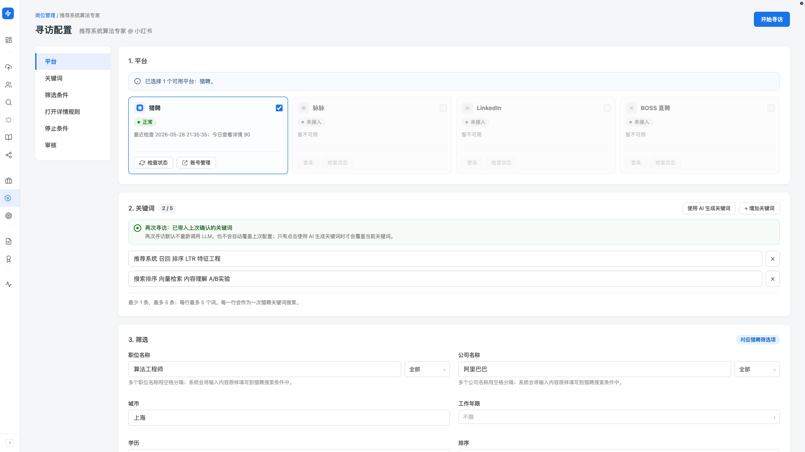
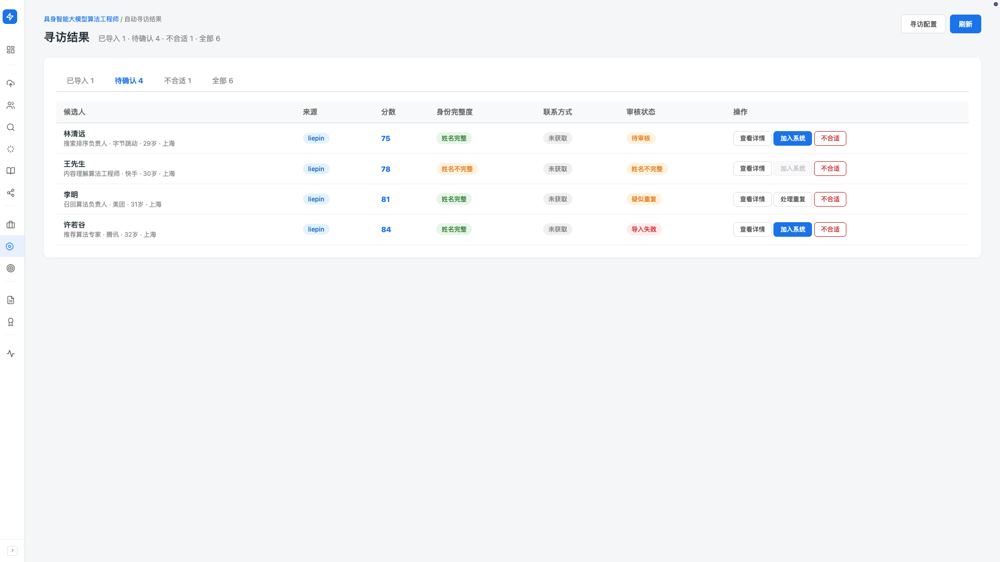

自动寻访
为岗位配好关键词和筛选条件，晚上让 Hunter 替你在招聘平台上跑寻访—— 打开候选人详情、按你的标准初筛、把符合的候选人草稿入到待审池。 第二天早上你花二十分钟过一遍待审池，确认入库即可。
产品里对应左侧 sidebar「岗位（需求）」分组下的「人才寻访」（Beta）。 配置入口是岗位详情页 → 寻访配置；总览页是「人才寻访」。
支持的平台
当前 Beta 阶段：
- 猎聘：已接入，主力寻访渠道
- 脉脉 / LinkedIn / BOSS 直聘：陆续接入中（每接通一个，你就多一个不眠不休的寻访伙伴）
自动寻访用你自己的招聘平台账号跑，所以第一次用要先在 Hunter 里登录猎聘账号。 登录入口在配置页的「平台」section，点「启用并登录」会弹出平台登录窗口， 完成后状态会变成「就绪」。
配置一次寻访
每次寻访绑定一个具体岗位。从岗位详情页进入「寻访配置」，里面分 6 个 section，从上到下填一遍即可。
-
选平台
勾选猎聘（其他平台已置灰，待接入）。 如果状态显示「需要登录」「限流」「验证码」「异常」，先按按钮提示处理—— 没就绪的平台不能开始寻访。
-
设关键词
1-5 条关键词组合，每行最多 5 个词。每行作为一次猎聘搜索。 可以手动写，也可以点「使用 AI 生成关键词」让 Hunter 根据岗位 JD 给你一组候选关键词。
-
设筛选条件（对应猎聘搜索筛选）
职位名称 / 公司名称（含范围：全部 / 当前 / 过往）· 城市（多个用逗号分隔）· 工作年限（不限 / 3-5 年 / 5-10 年 / 10 年以上）· 学历（不限 / 大专+ / 本科+ / 硕士+）· 排序（推荐 / 最近活跃 / 更新时间）· 求职状态（不限 / 当前开放机会优先）· 公司规模。
还有三个 toggle：隐藏已查看 / 隐藏已沟通 / 隐藏已获取联系方式—— 默认勾后两个，避免你重复消耗精力在已经接触过的候选人上。
-
设「打开详情规则」（列表初筛，不消耗 AI）
在猎聘的搜索结果列表上，什么条件的候选人值得打开详情看。 包括：年龄区间、学历多选、城市。 这一步只看列表卡片显示的字段做硬规则筛选，不调用 AI，速度快、量大不心疼。
-
设「停止条件」（满足任一即停）
三个数字上限，你说哪个先到哪个停：
- 已初筛数上限（默认 500）：从搜索列表判断过多少候选人卡片
- 已寻访数上限（默认 100）：打开过多少候选人详情
- 待确认数上限（默认 30）：放进待审池等你看的人数
这三个数字是寻访的「天花板」，避免任务跑飞。第一次跑建议保留默认，跑完一次有感觉再调。
-
设「审核」入库门槛
匹配分数 ≥ N 分（默认 60）的候选人进入待确认池，其他直接丢弃不打扰你。 想严格一点就调到 70-80，想多看一些就降到 50-60。
-
点右上角「开始寻访」
任务进入后台运行。你可以离开这个页面，去做候选人管理、Mapping 都行。

寻访在跑时你能看什么
左侧 sidebar 进入「人才寻访」总览页。从上到下：
- 3 个 KPI：今日已查看详情 · 今日待确认候选人 · 今日已入库候选人
- 异常处理入口（出现时）：如果任务在某个页面遇到提取异常或运行异常， 会出现红色横幅「N 个样本待处理」+「处理异常」按钮。异常状态下任务自动暂停， 不会继续打开详情或触达候选人——你可以放心去处理而不担心持续消耗
- 3 个 Tab：已寻访 / 正在寻访 / 全部
- 任务表格：每行一个寻访任务，显示岗位、状态徽章、待确认数、已入库数、操作
任务状态说明
- 排队中：等待资源（如平台限流冷却中）
- 运行中：正在跑寻访
- 已完成：达到停止条件或自然结束
- 需要审核：完成且有待确认候选人没看
- 运行异常 / 认证失败：需要你处理（点开任务进异常处理流程）
- 已停止：你手动停止
待审池：第二天早上花 20 分钟过一遍
这是自动寻访最重要的一步——AI 帮你筛过的候选人不会直接进库， 都暂存在待审池里等你拍板。
寻访结果页结构
从任务表格点某个任务进入「寻访结果」页面。顶部统计：
- 已导入：你点过「加入系统」的候选人数
- 待确认：等你看的候选人数
- 不合适：你标过「不合适」的
- 全部：四类合计
表格每行一条候选人草稿：候选人姓名、来源 URL、匹配分数、审核状态、操作。

逐条审核：怎么操作
点候选人姓名进入审核详情页。详情页展示：
- 从猎聘抓到的完整信息（工作经历、教育、技能、城市等草稿）
- 匹配分数 + AI 给出的优势 / 风险点
- 如果有疑似重复（库里可能已有同人），会单独提示
顶部三个核心操作按钮：
-
「加入系统」（蓝色主按钮）
确认这位候选人值得入库 → 草稿转正式记录入候选人库。 如果检测到疑似重复，会引导你先决定「同一个人 → 合并」或「不是 → 各自独立」。
-
「标记不合适」
这位不符合你的标准 → 标记为「不合适」。 不会被继续补充、触达、查重或入库， 但保留在结果里，未来反悔可以「恢复审核」。
-
「恢复审核」（标过不合适后出现）
把候选人从「不合适」恢复回「待审核」状态，重新决定。
待审池里的候选人，手机和邮箱默认遮挡，看到的是简介和经历。 点「加入系统」入库后，平台上的联系方式才会同步进候选人档案。 这是为了让你先按业务判断再决定是否消耗平台的"看号"配额。
审核详情页支持上传简历——你从其他渠道拿到这位候选人的简历 PDF/DOCX， 可以直接传上去，Hunter 会用完整简历覆盖原本的草稿信息，入库后档案更完整。
异常和限流怎么处理
招聘平台的反爬、限流、需要验证码——这些异常会让寻访任务主动暂停， 不会一直撞墙浪费配额。处理方式：
- 需要登录：点配置页平台 section 的「登录」按钮重新登录
- 验证码：在平台上完成验证后回 Hunter 点「检查状态」
- 限流：等冷却时间（一般几分钟到几小时），Hunter 会自动恢复
- 页面提取异常：「人才寻访」总览页顶部会出现红色横幅， 点「处理异常」进入异常处理 modal，逐条处理或忽略
最佳实践
自动寻访最好的用法是把它和你的工作时间错开—— 上午配好任务、下班前点开始，让它整夜跑； 第二天上午第一件事过待审池，决定哪些入库哪些拒绝。 这样不打断你的日常工作，但每天醒来都有"昨夜捞的新候选人"等你审。
一个岗位往往可以拆出 2-3 个不同的关键词组合（比如「推荐算法 工程师」「召回排序」「推荐系统 中级」）—— 这些可能在不同搜索条件下命中不同的人。 充分利用 5 条关键词的额度，能让寻访覆盖面广得多。
第一次跑某个岗位时不知道分数标准，建议把入库门槛设到 50 分跑一次—— 看待审池里 50-60 分、60-70 分、70+ 分的候选人质量分别如何， 找到你这个岗位的"该不该看"边界，下次再调到合适的阈值。
常见提示
按钮旁会显示原因：通常是平台没就绪（需要登录 / 限流 / 验证码 / 异常） 或关键词留空。按提示先处理。
登录窗口不小心关了 / 卡住了——回配置页平台 section 点「检查状态」， 状态会刷新成真实情况；如仍未登录，点「启用并登录」重新打开登录窗口。
常见原因：① 关键词太宽（如只填"算法"，命中泛滥）； ② 筛选条件太松（不限年限、不限学历）； ③ 入库门槛太低（≥ 50 分进了一堆边缘人）。 到配置页调紧任意一项，下次跑就准多了。
待审池积压到几百人不审是浪费——这些候选人在平台上可能很快被别人联系。 保持「跑一次审一次」的节奏， 一次任务完成后第二天就过完待审池，长期效率最高。